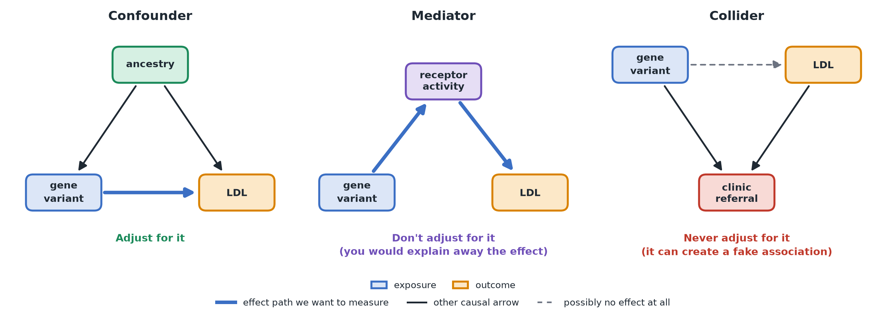

Causal Diagrams
In plain terms: a causal diagram is a simple drawing — boxes and arrows — of what you believe causes what. It turns a vague worry ("could something else explain this?") into a concrete, checkable picture.
The three roles a variable can play
Say Mia is studying whether carrying a gene variant affects LDL cholesterol. A third variable, ancestry (a person's genetic background), could play one of several roles:
- Confounder: ancestry affects both which variants a person carries (variant frequencies differ between populations) and LDL cholesterol directly (through diet and environment shared within a population). Drawn as arrows pointing from ancestry to both the variant and LDL. You should adjust for confounders — otherwise their influence gets mistaken for the variant's effect.
- Mediator: suppose the variant works by lowering the activity of the LDL receptor in the liver, which in turn raises LDL in the blood. Receptor activity sits on the path from variant to LDL (variant → receptor activity → LDL). Don't adjust for mediators if you want the variant's total effect — doing so would "explain away" exactly the mechanism you're trying to measure.
- Collider: imagine a variable that's a consequence of both carrying the variant and having high LDL — e.g. "the patient was referred to the lipid clinic" happens more often for carriers and for people with high LDL. Never adjust for colliders — conditioning on something caused by both your exposure and outcome (for example, by studying only clinic patients) can manufacture a fake association between them, even if none exists.

Getting these three mixed up is a common source of error in causal analysis — "control for everything available" is not a safe default.
How to build one in practice
- Write down the outcome and the exposure/treatment you care about.
- For every other variable you've recorded, ask: is it a cause of the exposure, a cause of the outcome, both (confounder), a consequence of the exposure (possible mediator), or a consequence of both (possible collider)?
- Ask about timing — causes must come before their effects, which helps rule out impossible arrow directions.
- Ask whether there's anything you didn't measure that you still believe affects the exposure and/or outcome — these "unmeasured confounders" belong on the diagram too, even without data for them, so the assumption that they don't matter (if you make it) is explicit rather than silently assumed.
Why this matters even with a good regression model
A regression can only adjust for variables you give it. If you give it a mediator or collider by mistake, or if an important confounder never makes it into the diagram (or the dataset) at all, the model will produce a confident-looking number that's still wrong. The diagram is what tells you which variables belong in the model and which don't — the regression math alone can't tell you that.